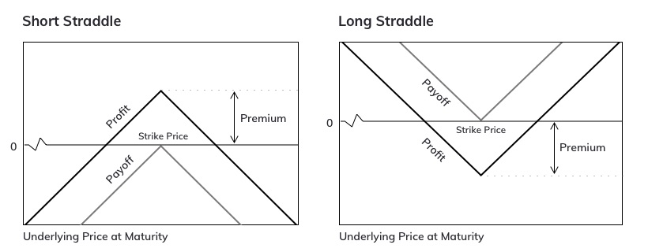

MOVE Contracts Guide
MOVE Contracts: Motivation & Use Cases
MOVE are a new class of derivative contracts whose price is proportional to the absolute value of movement in the price of the underlying asset of the contract over a period of time. This means that direction of movement (up or down) in the underlying asset’s price is not relevant.
The price of a MOVE contract reflects expectations about the future movement or volatility in the underlying of the contract. If your expectations about the movement are different from the priced-in expectations, you have a tade.
If you believe that the price of the underlying asset of the MOVE contract will go up/ down a lot, you can long the contract. In this trade, you are long volatility. Conversely, if you believe that the underlying asset price will be relatively stable, you can short the MOVE contract. In this trade, you are short volatility. Therefore, MOVE contracts enable you to speculate on volatility.
MOVE Contracts as a Pair of Options
Traders who are familiar with options will be easily able to figure that a MOVE contract is essentially a straddle. A straddle is combination of a PUT option and a CALL option, wherein both the options have the same strike price. The chart below illustrates the pay-off profile of a straddle.

It is evident from the above chart that profitability of a trade depends on the magnitude of price move rather than direction of price move.
Types of MOVE Contracts
We offfer two types of MOVE contracts:
-
Daily MOVE contracts: These MOVE contracts track the movement of the underlying in a 24 hour period. The ticker for daily MOVE contract has the following format: MV-[Underlying_Asset]-D-[Settlement Date], where Settlement Date is in ddmmyy format. For example, MV-BTC-D-050320 is the ticker of a daily MOVE contract on BTC that will settle on 5th March 2020.
-
Weekly MOVE contracts: These MOVE contracts track the movement of the underlying in a 7 day period. The ticker for weekly MOVE contract has the following format: MV-[Underlying_Asset]-W-[Settlement Date], where Settlement Date is in ddmmyy format. For example, MV-ETH-W-130320 is the ticker of a weekly MOVE contract on ETH that will settle on 13th March 2020.
Mechanics of MOVE Contracts
Price movement measurement
A MOVE contract settles to the absolute value of movement in price of the underlying. This means to find the settlement price of a MOVE contract, we need starting and ending prices.
Starting Price: is referred to as the Strike Price. This is the 30 min TWAP of the underlying’s price when the measurement interval starts. The measurement interval for a daily/ weekly MOVE contract is 24 hours/ 7 days.
It is important to note that a MOVE contract could be listed before its Strike Price is established. MOVE contracts where Strike Price is yet to be determined stay in auction mode. In this mode, traders can place/ edit/ cancel their orders but no matching takes place. Normal trading starts only when the measurement interval has begun and Strike Price is known.
Ending Price: is the 30 minute TWAP of the underlying’s price at Settlement Time.
Cost of trading MOVE Contracts
In a futures contract trade, no cashflow exchange occurs when a position is opened. In the case of MOVE contracts, the party buying the contracts (longs) is required to pay the cost of the contracts to the party selling it. This cost is referred to as Premium.
-
For Longs: Longs are required to pay Premium upfront. Premium is immediately deducted from the Available Balance as soon as a long trade is executed.
-
For Shorts: Shorts receive Premium paid by longs. Premium received is added to the Available Balance.
Mark Price
Like our futures contracts, open positions in MOVE contracts are marked using Fair Price Marking. Recall that a MOVE contract is comprised of a a pair of put and call options. The fair price of an option can be computed using Black Scholes model. The inputs for this model are Implied Volatility, Strike Price and Time to Settlement. Strike Price and Time to Settlement are well defined quantities. This means finding Fair Price of a MOVE contract boils down to finding the Fair Implied Volatility.
Computation of Fair Implied Volatility entails the following steps:
- Impact Mid Price is computed from the orderbook. Impact Prices are explained in detail here.
- Impact Mid Price, Strike Price and Time to Settlement is plugged into the Black Scholes formula to get the Impact Implied Volatility. This computation is done once every 5 seconds. Impact Implied Volatility is bounded between 40% and 130% for BTC and 70% and 200% for ETH.
- Fair Implied Volatility is defined as the moving average of 12 latest values of Impact Implied Volatility.
- Fair Price of the contract is obtained by plugging Fair Implied Volatility, Strike Price and Time to Settlement in the Black Scholes model.
Profit/ Loss Equation
The Premium of a MOVE contract is directly added to/ subtracted from the Available Balance of shorts/ longs. The cashflow that occurs when a position in a MOVE contract is closed is referred to as Pay-off. The Profit/ Loss of a position thus can be computed as
For longs
For shorts
Margin Requirement
Longs: The loss from a long position in a MOVE contract can never exceed the Premium paid. Due to this: (a) there is no other margin requirement for them and (b) longs can never get liquidated.
Shorts: Becauses losses from a short MOVE position can theoretically be unlimited, shorts are required to post margin. We use Isolated Margin approach for MOVE contracts. This means that every position has a dedicated amount of margin assigned to it. The minimum amount of margin to open a position is referred to as Initial Margin.
The minimum amount of margin, after factoring in losses, to keep a position open is reffered to as Maintenance Margin.
Just like in futures, margin requirement scales up with position size. Details of Margin Scaling are available here.
Liquidations
As explained above, long MOVE positions can never get liquidated. Short positions go into liquidation, when Position Margin after factoring in unrealised losses is less than Maintenance Margin, i.e.
where Position Margin is greater than or equal to Initial Margin.
The liquidation mechanism is exactly the same as for futures contracts. Any given position is liquidated in a step-wise manner to reduce the market impact of liquidations. Details of the liquidation process are available here.
Traders that are short MOVE contracts have the option of enabling Auto Margin Top-up to prevent their positions from getting liquidated.
Expired MOVE Contracts
The Settlement Prices of expired MOVE and futures contracts are availble on this page.